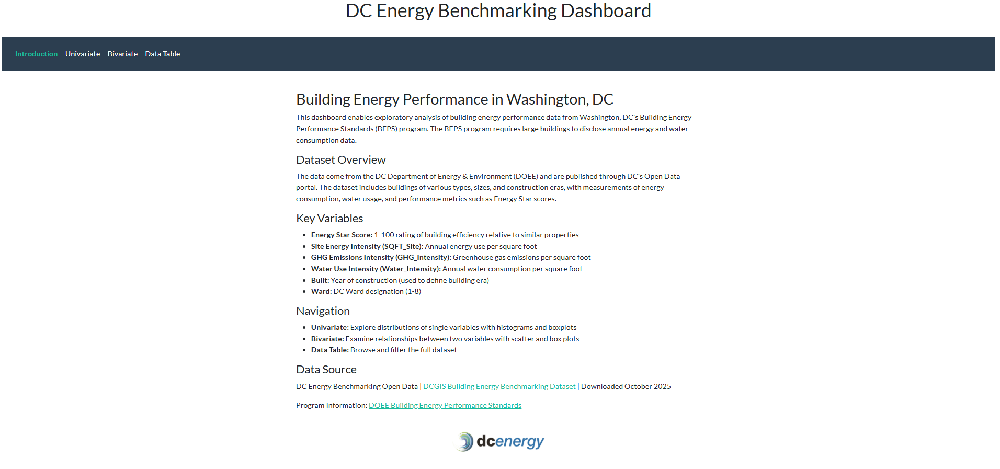

DC Energy Benchmarking Dashboard
Live app: dc-energy-benchmarking-dashboard
Preview:

Problem
Washington, DC’s Building Energy Performance Standards (BEPS) program requires large buildings to disclose annual energy and water consumption data. This creates a public dataset reflecting actual building performance across the city. However, raw data alone provides limited insight. The dashboard enables stakeholders—property managers, policymakers, researchers—to interactively explore energy performance patterns, test hypotheses about consumption relationships, and identify efficiency opportunities.
Key questions the dashboard addresses: - How does energy consumption vary by building age, size, or location? - Are certain building types systematically more efficient than others? - What is the relationship between energy intensity and key facility metrics? - How do year-to-year trends compare?
Approach
The dashboard is a multi-tab Shiny application that integrates exploratory data analysis with statistical hypothesis testing:
Introduction tab: Describes the BEPS program, dataset contents, variable definitions, and data lineage.
Univariate tab: Enables exploration of single variables. Users select a variable, apply optional log transformation, and visualize its distribution as a histogram (numeric) or bar chart (categorical). Includes a one-sample t-test against a user-specified null value, rendered as a clean summary table with estimate, confidence intervals, and p-value.
Bivariate tab: Examines relationships between two variables. Automatically selects appropriate geom (scatter for numeric pairs, boxplot for mixed types) and optionally overlays linear or smoothing fits. Users can inspect the linear model summary for numeric pairs.
Data Table tab: Browse and filter the complete dataset with optional numeric-only view.
All plots use bslib’s flatly bootstrap theme and are auto-themed via thematic::thematic_shiny() for visual consistency. Year-based filtering applies across all tabs.
Results
The dashboard reveals several patterns in DC’s building energy landscape:
- Pre-1900 buildings show significantly higher energy intensity than modern (2000+) construction, suggesting both structural inefficiency and occupancy/usage differences.
- Energy Star Score and site energy intensity show strong negative correlation for many building types.
- Large buildings (by SQFT) dominate the dataset, creating opportunities for efficiency interventions with high aggregate impact.
The interactivity allows users to segment by year and building characteristics, supporting targeted policy analysis.
Data Sources
DC Energy Benchmarking Open Data - DCGIS Building Energy Benchmarking Dataset: https://opendata.dc.gov/datasets/DCGIS::building-energy-benchmarking/about - Building Energy Performance Standards Program: https://doee.dc.gov/service/building-energy-performance-standards - Downloaded October 2025
The dataset includes building characteristics (year built, location), facility metrics (SQFT, metered status), and performance indicators (Energy Star Score, site energy intensity, GHG emissions, water intensity).
Project Structure
dc-energy-benchmarking-dashboard/
├── README.md
├── LICENSE
├── .gitignore
├── src/
│ ├── app.R
│ ├── data/
│ │ ├── dc_energy_benchmark_2025.rds
│ │ └── README.md
│ └── www/
│ ├── dc_energy_logo.webp
│ └── dashboard_preview.pngUsage
Live app: Visit https://sullenschemer.shinyapps.io/dc-energy-benchmarking/ — no installation required.
Run locally:
Requirements: - R 4.0+ - Packages: shiny, ggplot2, dplyr, tidyverse, broom, bslib, thematic, DT
Install dependencies:
install.packages(c("shiny", "ggplot2", "dplyr", "tidyverse", "broom", "bslib", "DT"))
remotes::install_github("rstudio/thematic")Launch the app:
shiny::runApp("src")The app will open in your default browser at http://localhost:3838/ (or a nearby port).
Deploy to shinyapps.io:
rsconnect::deployApp("src", appName = "dc-energy-benchmarking")Tech Stack
- R 4.0+: Core language
- Shiny: Reactive web framework
- ggplot2: Visualization grammar
- dplyr / tidyverse: Data manipulation
- broom: Tidy statistical outputs (t-tests, linear models)
- bslib: Modern Bootstrap themes
- thematic: Automatic plot theming
- DT: Interactive data tables
- rsconnect: Deployment to shinyapps.io
Limitations
- Self-reported data: Building operators report consumption; measurement protocols vary and errors occur.
- Large-building threshold: BEPS covers buildings above a certain size; small properties are underrepresented.
- Missing years: Not all buildings report every year; some join the program partway through the observation period.
- Survivorship bias: Buildings demolished or decommissioned drop from the dataset.
- Confounding variables: Energy intensity reflects both efficiency and occupancy patterns; the dashboard does not adjust for climate, use intensity, or plug loads.
- Cross-sectional: The current dataset captures 2024–2025 reports; longitudinal analysis across many years is limited.
License
MIT